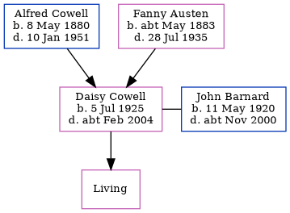

Daisy Ethel Barnard (née Cowell) 1925 - c2004
[ Home ] | [ Calendar ] | [ Surnames Index ] | [ Errors ] | [ Family History ]The child of Alfred Cowell (a transport driver) and Fanny Austen, Daisy Cowell, the first cousin once-removed on the mother's side of Nigel Horne, was born in Thanet, Kent, England on 5 Jul 19251,2,3 and. She married John Barnard (with whom she had 1 surviving child, ) Minster in Thanet around May 19434.
She died c. Feb 2004 in Forest of Dean, Gloucestershire, England1,3.
Parents
- Alfred John was born on 8 May 1880
- Fanny was born c. May 1883
Citations
- England & Wales deaths 1837-2007 - Findmypast
- England & Wales, Birth Index: 1916-2005 Online publication - Provo, UT, USA: The Generations Network, Inc., 2008.Original data - General Register Office. England and Wales Civil Registration Indexes. London, England: General Register Office. © Crown copyright. Published by permission of the Cont
- England & Wales, Death Index: 1984-2005 Online publication - Provo, UT, USA: The Generations Network, Inc., 2007.Original data - General Register Office. England and Wales Civil Registration Indexes. London, England: General Register Office. © Crown copyright. Published by permission of the Cont
- England & Wales, Marriage Index: 1916-2005 Online publication - Provo, UT, USA: The Generations Network, Inc., 2009.Original data - General Register Office. England and Wales Civil Registration Indexes. London, England: General Register Office. © Crown copyright. Published by permission of the Cont
Media
Thanet Advertiser 25-5-1943

England & Wales marriages 1837-2008 - BMD/M/1943/2/AZ/000250/002
England & Wales births 1837-2006 - BMD/B/1925/3/AZ/000276/071
England & Wales deaths 1837-2007 - BMD/D/2004/3/85850708
Family Tree
Map
Generated by ged2site. Last updated on Jul 3, 2024
Known Issues
Parent Alfred is listed in the residence for 1935, but this child is not
1939 UK register information missing